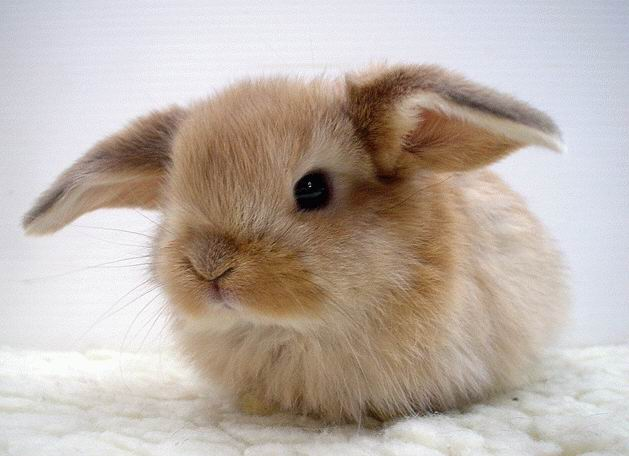
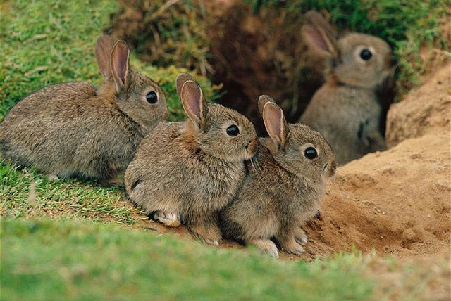

Кролик - описание, характеристика, особенности
Кролик – это млекопитающее животное, которое относится к отряду зайцеобразные,
семейству зайцевые. Этих зверьков не только разводят ради мяса и меха, но и содержат
в домашних условиях в качестве декоративных питомцев.
Строение и окраска:
Кролик имеет упитанное тело овальной формы и достаточно крупные уши длиной до 10 см.
Размеры туловища взрослых особей составляет от 20 до 55 см, а вес кролика варьируется
от 400 г до 2 кг и более.
У кроликов крупные и мощные задние конечности. Передние ноги пятипалые,
задние — четырехпалые. Пальцы оканчиваются крепкими острыми когтями. Кролики относятся
к типу пальцеходящих животных, при ходьбе им служат опорой кончики пальцев.
Шерсть кролика длинная и мягкая, а окрас включает различные вариации серого, коричневого
и желтого цветов, хотя нередко встречаются кролики с однотонным цветом меха.
Продолжительность жизни:
В дикой природе продолжительность жизни кроликов обычно не превышает 3-4 лет.
В условиях грамотного домашнего содержания кролики живут от 4-5 до 13-15 лет.
Самый старый домашний кролик умер в возрасте 19 лет.
Кролики мясных и пуховых пород в среднем живут 4 года, но при пониженной интенсивности
или полном отсутствии воспроизведения потомства и качественном содержании этот показатель
возрастает до 5-7 лет.
Декоративные кролики живут в домашних условиях от 5 до 8 лет, хотя среди них встречаются
экземпляры, доживающие до 10-12 лет.

Где обитают?
Кролики – животные, которые ведут исключительно наземное существование, чаще всего
выбирая для обитания места с пересеченным рельефом и достаточно густой растительностью.
Они предпочитают селиться вдоль балок и оврагов с обрывистыми берегами, уютно чувствуют
себя в лесных массивах, на лугах и полянах, поросших кустарниками или высокой травой.
А вот горных областей, расположенных выше 500-600 метров над уровнем моря, и сильно
заболоченных участков большинство видов пытаются избегать.
Часто кролики живут в непосредственной близости с человеком, облюбовывая пустыри или
свалки, а также окраины населенных пунктов. Важным фактором при выборе места обитания
является особенность грунта: кролики часто роют норы, а иногда и целые системы подземных
ходов, поэтому стараются выбирать участки с легкими почвами, так как в глинистых и
каменистых грунтах обустроить себе нору довольно сложно. Нередко животные занимают уже
готовые норы, вырытые и заброшенные другими животными.
Кролики распостранились практически по всем континентам. Большинство видов ведут оседлое
существование, занимая определенную территорию от 0,5 до 20 Га. Индивидуальный участок
занимает семейная группа из 8-10 взрослых особей, во главе которой стоят доминантные
самец с самкой.